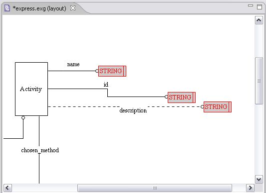
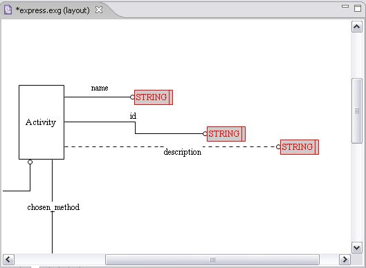
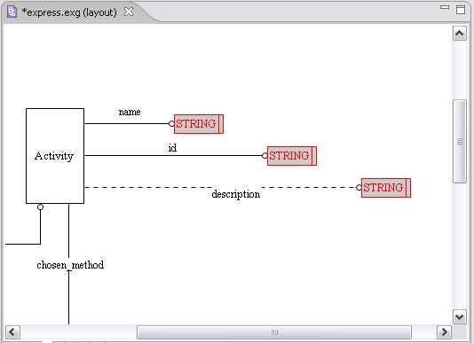

Arrange
Adjust the spaces between selected objects:
Horizontally
Vertically
Arrange Horizontally
Follow the routine to evenly arrange selected objects (see
Figure 1
) horizontally between the first and the last selected object, left to right:
Right click on the selection area. The context sensitive menu appears.
Select the
Arrange --> Horizontally
menu item. Selected objects are arranged horizontally (see
Figure 2
).

Figure 1.
Selected objects on the diagram.

Figure 2.
Objects arranged horizontally.
To top
Arrange Vertically
Follow the routine to arrange selected objects (see
Figure 1
) vertically between the first and the last selected object, top to bottom:
Right click on the selection area. The context sensitive menu appears.
Select the
Arrange --> Vertically
menu item. Selected objects are arranged vertically (see
Figure 3
).

Figure 3.
Objects arranged vertically.
To top
Copyright © 2005-2008
LKSoftWare GmbH
. All Rights Reserved.
JSDAI is a registered trade mark of LKSoftWare GmbH.